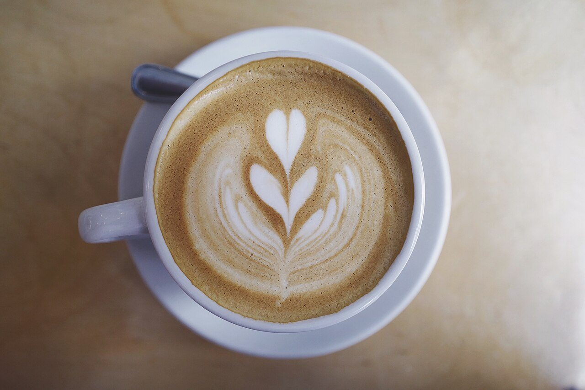
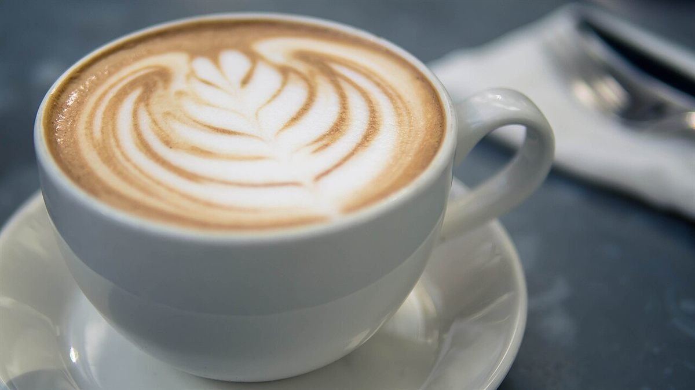

毛矢珈琲
Keya Coffee
カフェ「毛矢珈琲 Keya Coffee」のご案内ページです。営業時間やメニューなど、詳しいことは準備中。まずはInstagramをのぞいてみてください。
ピクニックバスケットの部位の配置図(制作側のイラスト)



写真はフリー素材のイメージです。お店のものではなく、お店で提供している商品を示すものでもありません。
制作側の連想
バスケットの部位を、配置図にしてみる
このサイトは、持ち出して使うピクニックバスケットを図にしたつもりで作りました。六つの部位に番号をふり、正面と上からの二枚の図に並べています。制作側の連想で、お店の理念・由来とは無関係です。実際の製品の仕様を示すものでもありません。
凡例
六つの部位
- 1ふた本体の上に二枚並べて、左右に開ける覆い。
- 2持ち手ふたの上にまたいで渡す、提げるためのアーチ。
- 3留め革ふたの合わせ目をとめる、革のベルトとバックル。
- 4編み目本体の外側をつくる、縦横に組んだ編み材の面。
- 5内張り本体の内側に張る、格子柄の布のライナー。
- 6食器ベルトふたの裏に付ける、カトラリーなどを差しておく帯。
ギャラリー(イメージ)
コーヒーとパンの写真


写真はコーヒーとパンのイメージです。お店のものではなく、お店で提供している商品を示すものでもありません。
ご案内
お店のこと(確認できたものだけ)
| 所在地 | 〒918-8003 福井県福井市毛矢３丁目２−１１ |
|---|---|
| 電話 | 準備中 |
| 営業時間 | 準備中 |
| 定休日 | 準備中 |
| ご予約 | 準備中 |
| 駐車場 | 準備中 |
| SNS | Instagram @keya_coffee |